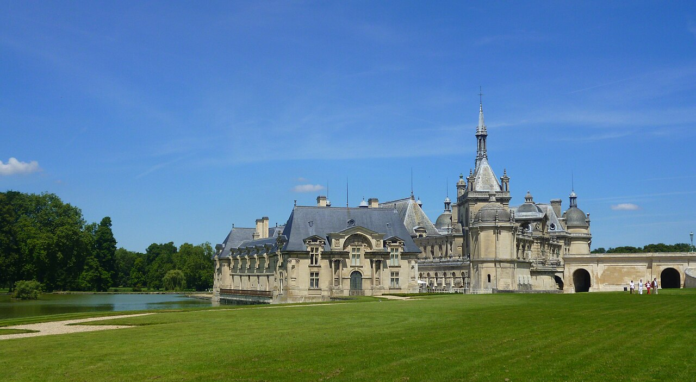

Raphaël : Les Trois Grâces
Ce petit tableau de la Renaissance italienne invite à observer comment la composition et les gestes construisent une image équilibrée. Sa taille contraste avec la densité des murs du musée.
Le Musée Condé n’est pas un musée indépendant à côté du château de Chantilly : ses collections occupent les galeries et les salles du château. Elles ont été réunies par Henri d’Orléans, duc d’Aumale, qui a voulu préserver jusqu’à leur présentation. Peintures de la Renaissance, œuvres françaises, livres rares et décors princiers invitent à découvrir autant le regard d’un collectionneur que l’histoire de l’art.

Le duc d’Aumale a constitué une collection exceptionnelle de peintures anciennes qu’il a léguée à l’Institut de France. Sa volonté de conserver la présentation des galeries donne au musée son caractère singulier : plutôt qu’un parcours entièrement recomposé selon les usages d’un musée actuel, le visiteur découvre une manière de collectionner et d’accrocher les œuvres à la fin du XIXe siècle.
Les tableaux sont souvent rapprochés en ensembles denses, mêlant écoles, formats et époques. Cette disposition demande de ralentir le regard : un chef-d’œuvre n’est pas toujours isolé sur un mur vide. La Galerie de Peinture et la Tribune témoignent autant du goût du collectionneur que de la valeur historique des œuvres.
Ce petit tableau de la Renaissance italienne invite à observer comment la composition et les gestes construisent une image équilibrée. Sa taille contraste avec la densité des murs du musée.
La scène met en tension violence narrative et construction rigoureuse de l’espace. Elle donne un exemple du rôle de la composition dans la peinture d’histoire.
Un portrait permet d’examiner comment un artiste choisit de se représenter, à travers posture, vêtement et regard. Il apporte un contraste avec les grands sujets religieux ou mythologiques.
Ces œuvres figurent parmi les incontournables proposés dans le parcours officiel de deux heures. Vérifiez leur visibilité en cas de prêt, restauration ou fermeture ponctuelle.
Le Cabinet des livres n’est pas une bibliothèque ordinaire ouverte sans restriction. Ses manuscrits, livres anciens et documents fragiles constituent l’une des collections les plus importantes du musée. Les Très Riches Heures du duc de Berry, conservées à Chantilly, ne peuvent pas être exposées en permanence : le musée en propose notamment une découverte numérique.
Les fonds dépassent le seul cabinet : l’ensemble du château conserve plus de 60 000 volumes, 80 000 lettres et de nombreux plans et archives. La visite du cabinet permet de comprendre cette passion du livre et de la connaissance, mais elle nécessite de respecter un dispositif de réservation.
La visite dure 30 minutes, avec une jauge limitée à 30 personnes. Arrivez au moins 10 minutes avant l’horaire réservé.
Le château propose un billet 1 jour comprenant le Cabinet des livres et un billet d’accès au cabinet annoncé à 3 €. Vérifiez la combinaison exacte au moment de réserver : un créneau horodaté est obligatoire.
Sources : histoire et fonds du Cabinet des livres ; fonctionnement des créneaux.
La visite du Musée Condé se déroule dans le château, au contact des appartements et de salles historiques. Les jardins de Le Nôtre et les Grandes Écuries font partie du Domaine de Chantilly mais ne constituent pas des sections des galeries de peintures. Cette distinction est importante pour acheter le bon billet et choisir son temps de visite.
Le billet 1 jour présenté par le domaine peut donner accès au château, au parc et aux Grandes Écuries, selon la formule choisie. À l’inverse, le billet Parc seul n’est pas un billet d’entrée aux galeries du Musée Condé.
Choisissez quelques œuvres de Raphaël, Poussin et Ingres, puis regardez leur place dans l’accrochage du duc d’Aumale. Le musée propose une visite guidée des galeries d’environ 45 minutes à certaines dates, moyennant supplément.
Associez les galeries et le Cabinet des livres, en réservant d’abord le créneau obligatoire de ce dernier. La visite du cabinet est limitée à 30 minutes ; ne laissez pas sa réservation pour la fin du parcours.
Le domaine propose un parcours officiel de deux heures consacré à la Galerie de Peinture, aux appartements et au Cabinet des livres. Il peut servir de trame, sans vous obliger à visiter aussi les jardins et les Grandes Écuries le même jour.
Le billet horodaté 1 jour avec Cabinet des livres est affiché à 24 € au plein tarif et 20,50 € pour les 7–25 ans. Le billet Parc seul coûte 9 € ou 7 € selon le tarif ; il ne remplace pas le billet du château-musée. Des visites guidées sont proposées avec supplément.
Le domaine affiche des horaires qui changent selon la saison et le programme : les espaces du château et les jardins ne ferment pas nécessairement à la même heure. Consultez les horaires affichés par le château pour votre date précise.
Le Diamant rose est annoncé à partir du 17 octobre 2026 et Rosa Bonheur et le cheval du 12 septembre 2026 au 3 janvier 2027. Les sources officielles affichent des dates de fin différentes pour le Diamant rose : vérifiez la date retenue avant de réserver au-delà de janvier 2027.
Le château se trouve à Chantilly dans l’Oise. Les billets et activités se réservent sur le site du domaine ; le Cabinet des livres exige son propre créneau horodaté. Consultez les modalités d’accès, de transport et d’accessibilité avant votre déplacement.
Sources : tarifs et billets et programmation du château, consultés le 23 octobre 2026.
Le Musée Condé convient particulièrement à ceux qui souhaitent découvrir des tableaux anciens dans leur présentation historique et une bibliothèque de manuscrits rares. Le Palais des Beaux-Arts de Lille propose un autre ensemble de peintures et de sculptures ; le Louvre-Lens s’organise autour d’une galerie chronologique ouverte. Retrouvez les autres établissements dans notre sélection Hauts-de-France.